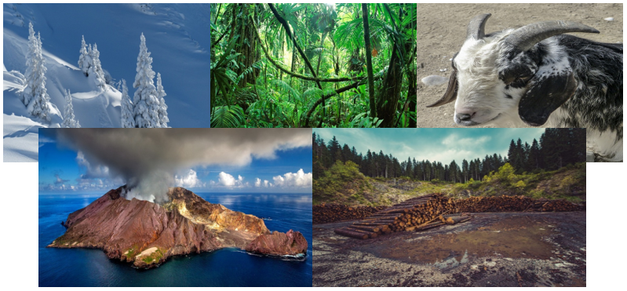
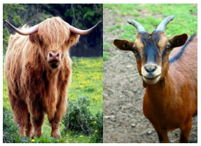
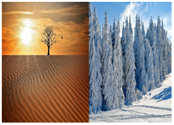
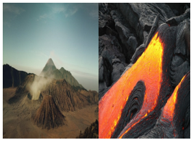
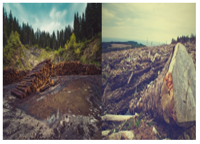
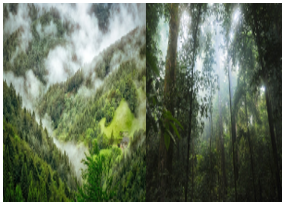

- Son un conjunto de elementos presentes en la naturaleza y que comprenden el paisaje natural que podemos observar en distintos lugares.
- Dentro de estos factores naturales tenemos lo que son:
| Organismos vivos | Animales de pastoreo como los vacunos son beneficiosos para la vegetación. Sus heces ayudan a abonar la tierra. Mientras los caprinos, con sus pezuñas y su manera de obtener su alimento erosionan la tierra. |  |
| Clima |
|
 |
| Relieve | Existen relieves benéficos (como los montes repletos de árboles) y perjudiciales, como los volcanes, que pueden afectar el terreno ya sea por ceniza o por riesgo de explosión magmática. |  |
| Deforestación |
Es un factor que en gran manera afecta a la tierra porque los árboles y plantas demoran mucho en volver a crecer y son elementos importantes para el medio ambiente. |
 |
| Sobre-forestación | Este extremo también resulta perjudicial al entorno, pues demasiada vegetación absorbe todos los minerales de la superficie donde se encuentran. De este modo el suelo se queda sin minerales suficientes para su propio desarrollo. |  |